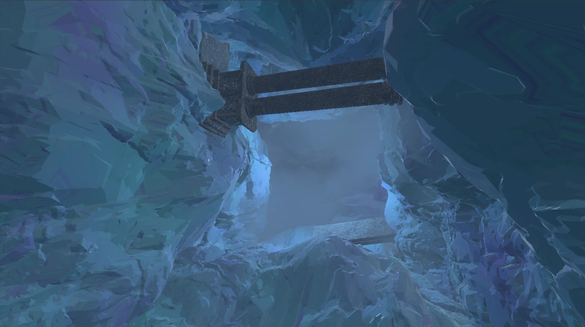
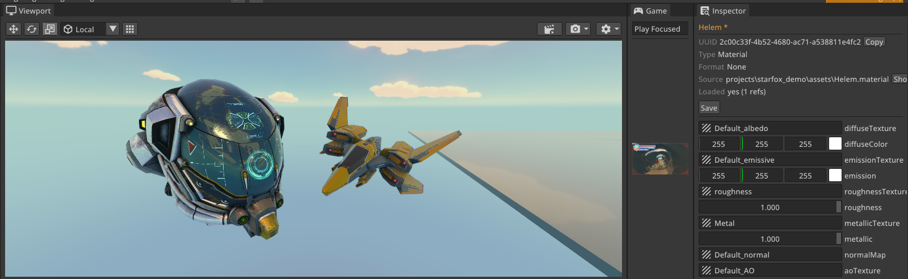

For BUAS Y2 block C,
We were tasked to make a cross platform game engine for PC and PS5
I was responsible for rendering on both platforms, as the only graphics programmer
in a
team of 6 other engine programmers.
We were then allowed to use this engine in the next block to make a game in a cross
discipline team of 17 people (2 Artists, 4 Designers, 10
Programmers and a Producer).

My Role
We chose to start our engine from scratch, rather than from the teacher's template, since
we wanted a project based engine that was focussed on scripting.
As I was the only graphics programmer I was responsible for creating the renderer for
both platforms, PC and PS5.
Decisions
As I thus had to make a renderer very quickly that everyone depended on, I took some
decisions to make sure to not take too much risk.
These main decisions were 2 things, PC Platforms, I chose to go with OpenGL as the platform on pc rather than nicer
modern platforms. While I had used DX12 before in my volumetric renderer this was build on MiniEngine so I
had not made a renderer like that from scratch, and more importantly my teammates know
at least some OpenGL so that allowed them to be able to review my code. Abstraction, I heard from teams before us that they got in trouble by trying to
make clean low level abstractions. To keep things safer for us I chose to put the
abstracting very high up, the platform independent code only submits things to be
rendered. The renderers eventually ended up being very similar in structure anyways,
and I feel like now I would be able to put the abstraction way lower.
Features
I made sure to implement all the features for both platforms at a time to keep feature
parity up throughout development. And also heavily prioritized features, based on
what we needed and the game/demos that we were making.
PBR Renderer
For the base renderer I copied (and translated to pc) a lot of the code from my PS5 PBR renderer to be able to get this running quick.
I got a basic renderer with the intended api setup within the first week, meaning the
team was never blocked by it.
And IBL set up quickly after. The renderer is just forward since our games did not
require any lights apart from directional ones at all. But there is a depth prepass
to avoid overdraw.

Particles
Our games heavily relied on VFX to look good, So I implemented a particle system with a
lot of configurability. To make it easier to allow configurability I chose for
updating the particles on the CPU, Although the rendering of them is gpu driven
using mesh shaders.
Even before we got a vfx/tech artist in our team in the second block I talked to them to
know what to implement.
Which brought me to making sure to implement, spritesheets, mesh particles, and depth
fading. Along with a lot of settings for their physics.
UI
For the UI system I made sure to re-use as much of our functionality as possible to avoid
extra work for a seperate UI system. Meaning it reuses our level editor so it
immediately works with the editor and timeline system. Then for the rendering it just
draws these relative to a canvas component. And also supports masking using stencils.
Post Processing
I implemented a couple of Post processing effects. These include, - Bloom using a
mip chain. - Mesh Blending - A Toon
Shader - Outlines, for editor selection and gameplay. - Fog
Other work
Further on this project after we got a multi disciplinary team and more programmers as
well, I spend a lot of time helping and working with other and fixing issues that were
brought up. For example with artists,
implementing a bunch of fixes and smaller features to make their work easier. Like color
corrections, more material features and particle features
Contributed systems
There is also some other systems that I partially contributed with either making parts of
it or helping others build on top of what I had build. Some of these
include:
Custom slang shaders, I helped research how they
work on cross
platform, Diagnosed issues with the spir-v OpenGL loading we were using and implemented
default variables and lighting setup into them.
Angelscript scripting, Binded new functions/variables and diagnosed some
performance issues. Lightprobes, helped explain as they were build upon my
existing IBL system and multiple view rendering. FMOD, reimplemented spatial
audio.